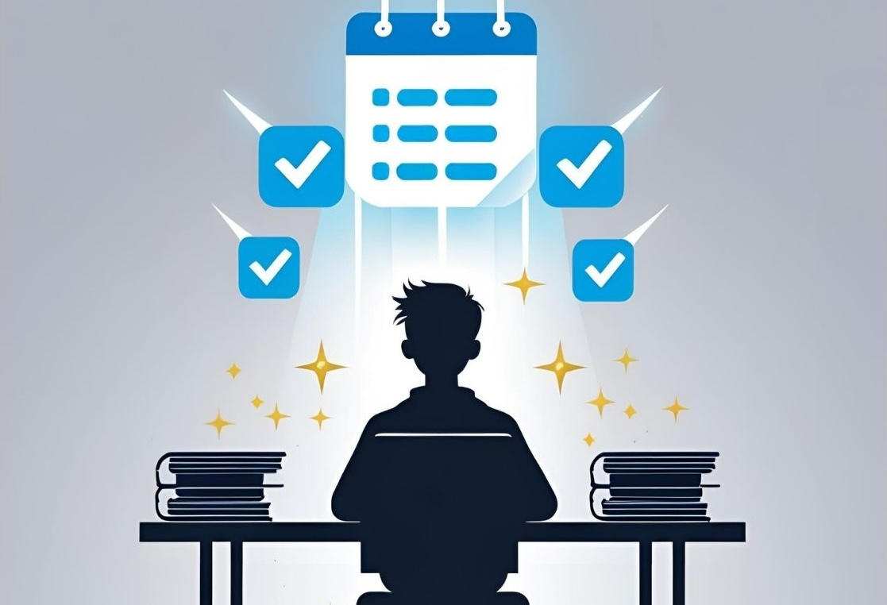

「明日から…」を終わらせよう。
机に向かえない君を【自動で動かす】
30日間の超習慣化プログラム
偏差値42→難関私立大合格。
三日坊主だったともきんぐが証明する
「頑張らずに勉強が続く」仕組み。
”机に向かえない”今の自分のままで、
受かる未来は見えますか？

何度「明日こそは」と決意しても、結局三日坊主…
やろうと思っても、何から始めていいか分からず時間だけが過ぎていく…
周りは頑張ってるのに、自分だけ前に進んでいない感じがする…
「勉強しなきゃ」
そう思うほど、スマホを触る手が止まらない。
その最悪なフィーリング。出口のないトンネルのような日々。
痛いほどよく分かります。
なぜなら、ともきんぐ自身がそうだったから。
高校３年の夏時点で、ともきんぐの校内偏差値は42。まさに「やばい」状態でした。
「青学に行きたい…」
目標だけはデカいのに、毎日１時間すら机に向かえませんでした。
何度も「明日こそは」と誓っては、三日坊主を繰り返す。
気づけばスマホで時間が溶けていく。
そんなともきんぐが、半年後には偏差値20UP、E判定から青学に合格しました。
勉強を継続できないのは、『君が弱いから』じゃない。
実は、多くの受験生が「一人で勉強を続ける」ことに苦労しています。
人間は本能的に楽をしたい生き物。
一人きりだと誘惑に弱くなり、サボっても誰にもバレない安心感から楽な方に流されてしまうのは、ごく自然なことです。
君に必要なのは、根性ややる気ではなく、「毎日やれる仕組み」と、「君を一人にしない伴走者」。
もう、一人で悩む時間は終わりにしよう。
「ともきんぐ式 勉強習慣獲得プログラム」が、君を変えます。

君の「一人では勉強が続かない悩み」を根本から解決し、受験を乗り切るための揺るぎない「勉強習慣」を身につけるためのプログラムを作成しました。
「一人じゃ勉強が続かない」君が、無理なく、着実に、「毎日コツコツ頑張れる自分」に変わるための、科学に基づいた「仕組み」と、君の「伴走者」がここにいます。
迷う時間をなくし、行動を始めるスイッチを入れる「毎日ミッション」

「今日、何をすればいいんだろう？」と考える無駄な労力や時間を消し去ります。
このプログラムでは、30日間、心理学に基づいたスモールステップで、「今日の君は、これだけやればOK」という具体的な学習ミッションが毎日君のLINEに届きます。
- 毎日「これだけ！」が明確に。迷わずすぐに取りかかれます。
- 無理なく達成できる設計。小さな成功体験を毎日積み重ねられます。
- 習慣化の土台が自然に作られます。
さらに、ミッションをクリアしたかどうかを毎日LINEでご報告いただきます。この「報告する」という外部からの目が、一人だとついついサボってしまう君に、適度なプレッシャーと「やらなきゃ！」という良い強制力を生み出します。
「挫折させない」ともきんぐの個別LINE伴走サポート

このプログラムの最も大切な要素の一つが、私、ともきんぐによるLINEでの個別サポートです。
もしミッションが達成できなかった時も、決して君を責めません。
「なぜ今日は難しかったのか？」「次回は時間やタイミングを変えてみようか？」「この教材の方が取り組みやすいかも？」など、君の状況に合わせて、原因を一緒に考え、具体的な改善策をLINEで丁寧にアドバイスします。
- 君の挫折ポイントを一緒に見つけ、乗り越えるために尽力します。
- ”いつでも相談できる相手がいる”という安心感。
- 「見守られている」意識が、継続する力になります。
勉強内容に関する疑問や、受験に関する不安など、プログラム内容以外の学習相談にも、プログラム期間中であればいつでも対応します。
「理解を深め、継続を加速させる」週一の限定動画配信

君の習慣化をさらに加速させ、モチベーションを維持するための特別な動画を週に一度、ともきんぐが直接お届けします。
- 習慣化の原理や脳科学に基づいた、より深いノウハウ
- モチベーション維持の秘訣、受験期のメンタル管理術
- 受験生の悩みに寄り添った限定コンテンツ。
ともきんぐからの直接的なメッセージが、あなたの継続力を力強く後押しします。
30日後、自動的に机に向かう君へと進化します。
プログラムを終えた後、君の勉強習慣は劇的に変わっています。
毎日3時間（またはそれ以上）集中して勉強するのが「頑張ること」ではなく、「まるで呼吸をするかのように当たり前」になり、勉強への心理的なハードルが驚くほど下がります。
- 勉強するまでの「めんどくさい」時間が激減。
- 計画通りに進められることが、自分への確かな自信に。
- 毎日、確実に合格へと進む力が身につきます。
- もう、一人で抱え込み、悩む必要はありません。
受験本番、「やれるだけのことは全てやった」と胸を張って言える。
その未来を、今、手に入れませんか？
「やればできる」という成功体験は、勉強だけでなく、これからの人生の大きな力になります。
プログラム詳細とお申し込み
- ともきんぐ式 勉強習慣獲得プログラム
- 実施期間：
- 30日間
- 提供形式：
- オンライン（LINE公式アカウントによるコーチング）
- 価格：
- ¥3,000 （追加費用なし）
- 30日間の毎日ミッション配信
- LINEでの日次進捗確認＆個別アドバイス
- プログラム期間中の学習相談（LINEにて）
- 週に１度のプログラム限定動画配信
プログラム内容
※ 本プログラムは習慣化に焦点を当てており、特定の科目の個別指導は含みません。
さあ、君の「明日から」を、今度こそ実現させよう
一人で悩む日々は、今日で終わりです。
あなたの本気、ともきんぐが受け止めます。
全てのミッションをクリアして「毎日コツコツ頑張れる自分」を手に入れ、自信を持って受験に臨む未来を掴もう。